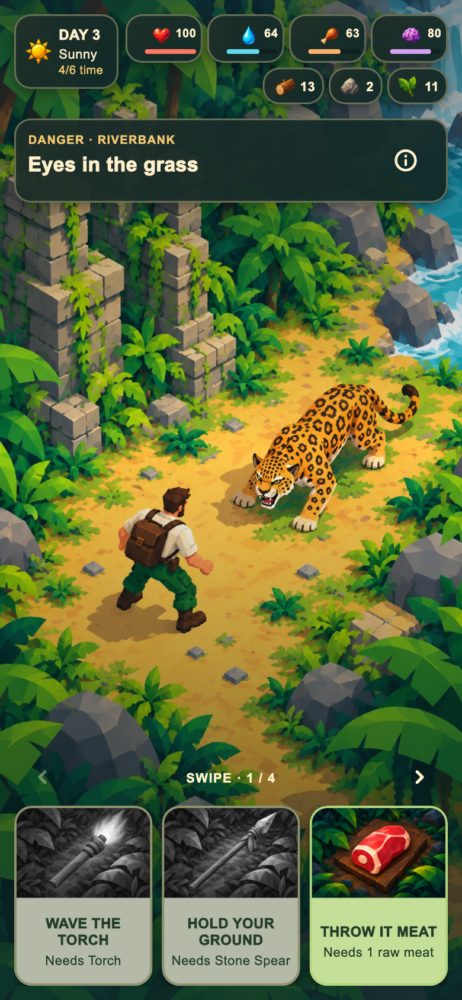
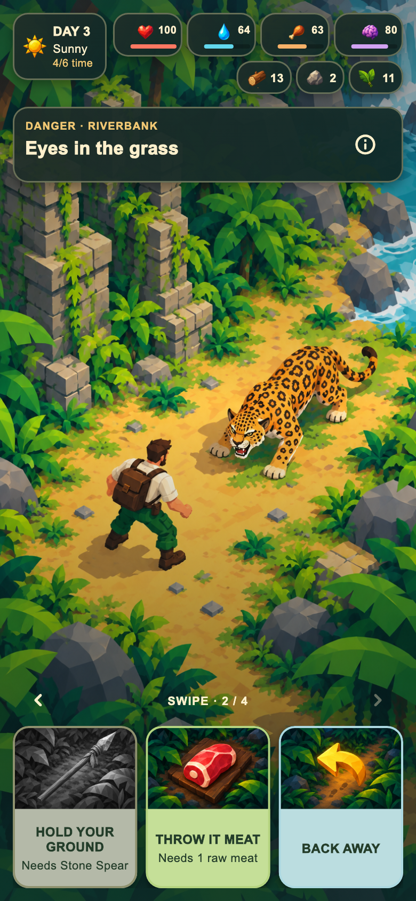
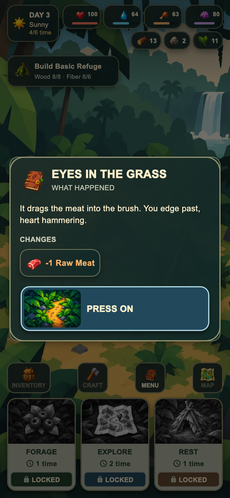
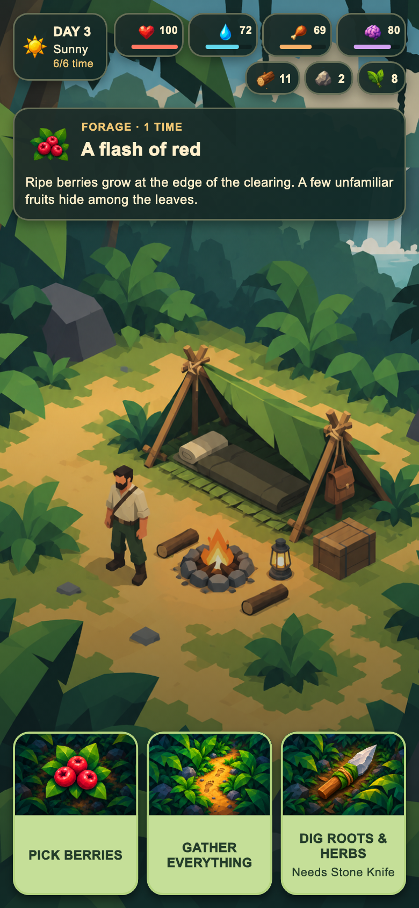
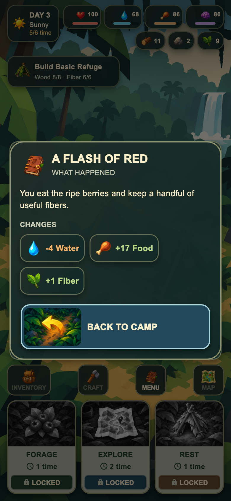
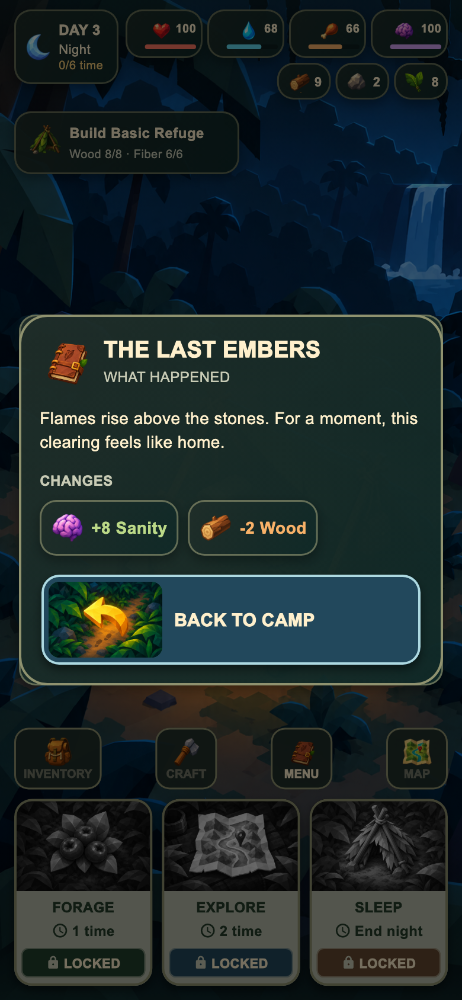
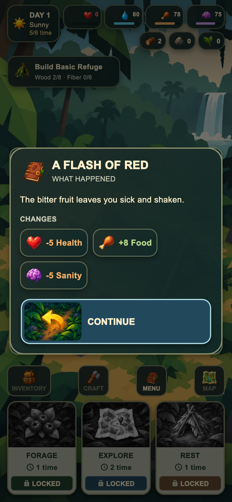
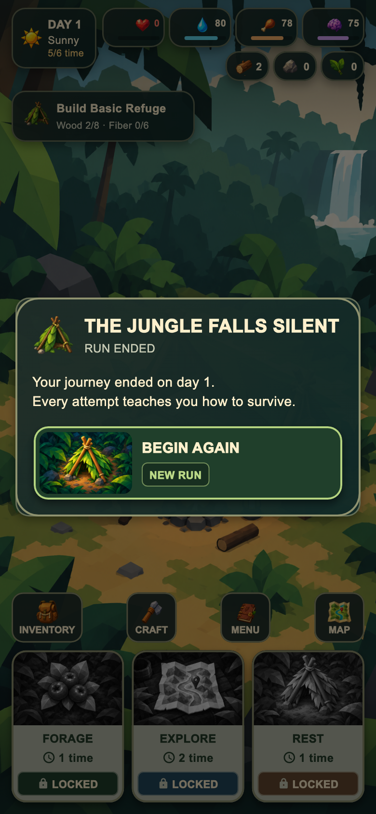

01
Encounter — rövid döntési kártyák
Három fix, 152 logikai pixel magas kártya, előre jelzett eredmény nélkül.
PNG letöltéseRövid, fix magasságú kártyák minden eseménynél: akciónév, illusztráció és szükséges feltétel. A jutalmak, statváltozások, kudarcok és sikeresélyek nincsenek előre feltüntetve.
A választás után popup foglalja össze a történteket és a tényleges változásokat. A képsor valódi Flutter UI-műveleteket mutat, 390 × 844 logikai mobilméreten, 2× exporttal. A teljes tesztkör még hátravan.
A teljes játékgaléria
Három fix, 152 logikai pixel magas kártya, előre jelzett eredmény nélkül.
PNG letöltése
A sor lapozható; a kártyákon csak az akció és feltétele látszik.
PNG letöltése
A ténylegesen megnyílt eredmény-popup: mi történt és mi változott.
PNG letöltése





A menet lezárása az eredmény-popup folytatása után látszik.
PNG letöltése